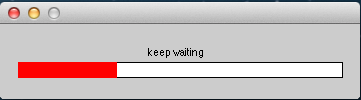
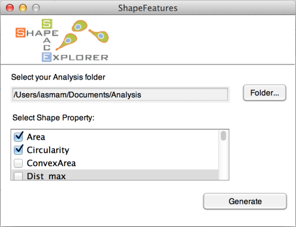
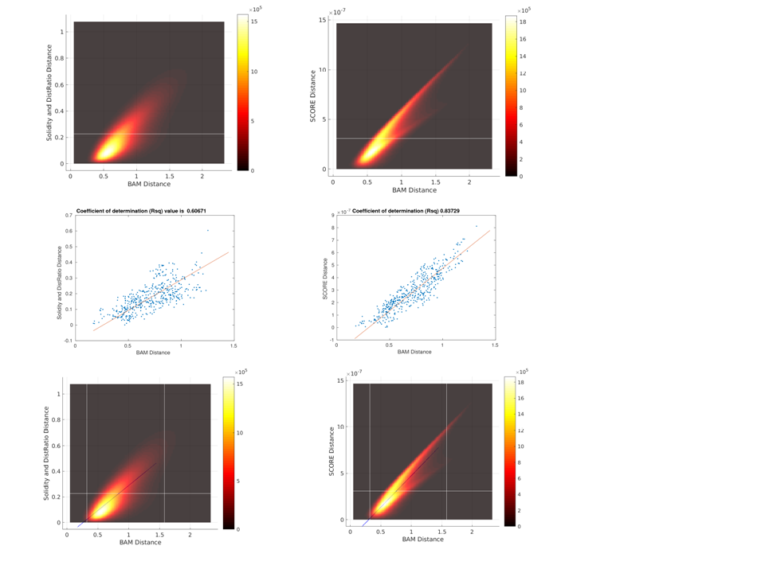
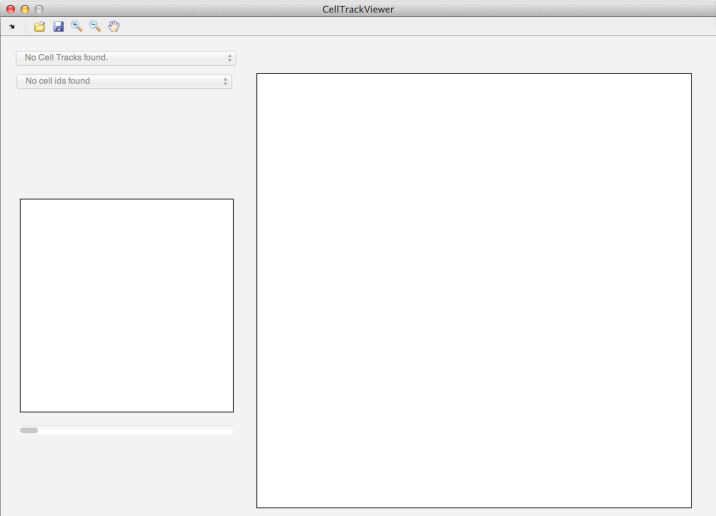
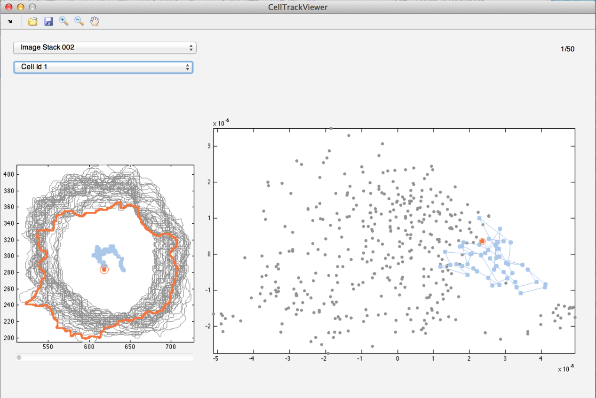

Display Shape Features
To validate embedding, calculate and display shape features for all shapes.
To pre-process data for shape features run 3-ShapeFeatures > Run_ShapeFeature_Processing select the Analysis folder. A progress bar should appear, indicating how long the program takes to complete. Took about 1.5 hours for 37818 shapes dataset.

After successful completion, the program should have created the file
- Morphframe.mat
Generate Shape Features
To generate various shape feature plot, run 3-ShapeFeatures > generateShapeFeature and select the type of graphs the program should create (the example below selected Area and Circularity):

After successful generation, the programs plots all figures in the folder Analysis/Figures/3ShapeFeature
As a validation step, run 3-ShapeFeatures > Run_PlotBAMvsSCORES and select the analysis folder, then program will produce the following figures:

First and second rows (from left to right) show a comparison between ‘Score’ and ‘Solidity and DistRatio’ distributions, respectively, while third row shows regression lines on top of the shape distributions.
Note: please make sure that the BAM distance matrix (named ‘Dist_mat.mat’) is stored in the same analysis folder otherwise you can copy-past it to the same folder.
Interactive Shape Explorer
The interactive shape explorer permits to inspect the track of a single cell in shape space over time. Run 3-ShapeFeatures > CellTrackViewer (see below)

Then, click on the folder and open the Analysis folder. The first drop down menu permits to select the Image Stack of the sample, while the second drop down menu shows all non-empty cell-ids of this image stack.

Note: when saving a track of a cell, the program saves a movie for the track in shape space and the shapes in the shape plot individually and combined in tiff format, as well as each frame in EPS format, which permits to edit them easily.